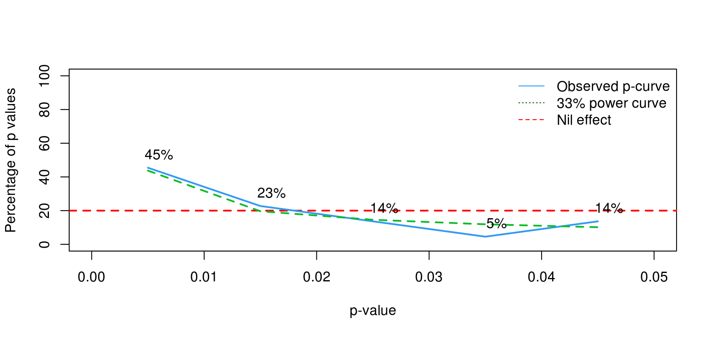
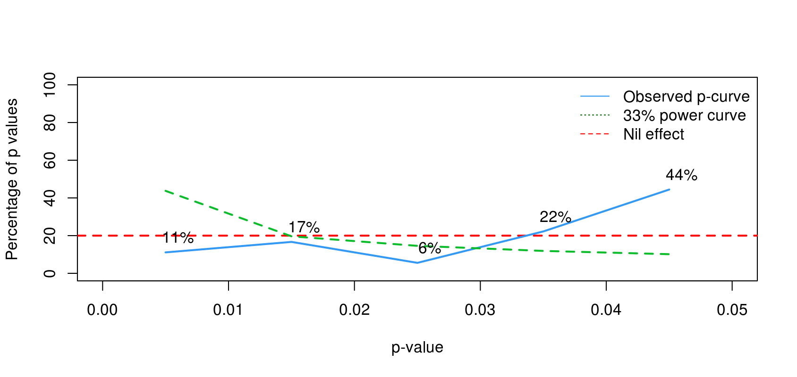
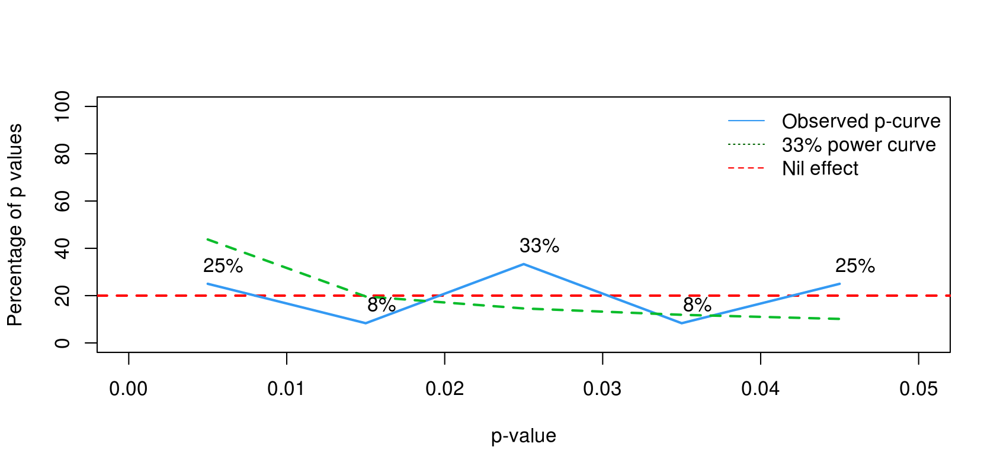

擺姿勢也許能增加你的自信，但是不能真正改變你
初稿2016/10/6 12:59:58上線
一校2016/10/6 21:50:00完成
二校2016/10/11 22:33:00完成 加強版：增加2017年2月22日TED訪問Amy Cuddy的摘要，以及各方評論。
事件起因
2016年的九月底，最受注目的國際新聞是當屆美國總候選人首次電視辯論會，還有當年度搞笑諾貝爾獎陸續公佈，為十月初的諾貝爾獎公佈暖身。就在這段時間，有一份心理科學危機消息在歐美社會科學圈引起關注，在九月的最後一個星期引起許多討論。雖然這則事件的熱度被其它更重大的新聞消息蓋過，Retraction Watch轉述New York magazine的消息之後，一星期之內與事件有關的核心人士先後公開表態。
為何這個事件值得關心心理科學知識進展的讀者注意？要從9月25日晚上，目前任職UC Berkeley的Dana Carney，在個人網頁發表的公開信說起。Dana Carney是2010年發表於心理科學期刊(Pscyhological Science)的論文“Power posing brief nonverbal displays affect neuroendocrine levels and risk tolerance”共同作者之一。這篇論文為大眾所知，是另一位共同作者Amy Cubby於2012年在TED talk的演講，以這篇論文的研究結果向聽眾宣傳權力姿勢效應 ：改變身體語言能增加個人執行力。演講錄影的中文字幕版見下方影片：
這場演講錄影在英語世界至今已累積3千6百萬的瀏覽次數，youtube中文字幕版的瀏覽次數也逼近54萬人次。使用“權力姿勢(Power Posing)”輸入google搜尋，會發現許多介紹及推廣這項研究及觀點的中文資料，而且都是一面倒的肯定。其中有一篇刊登於泛科學的介紹文，有研究內容的詳細介紹，尚不清楚權力姿勢效應 為何這麼轟動的讀者，建議先轉個彎去看這篇介紹文和Amy Cubby的演講，再回來看這場925事件:)
9月25日晚上，Dana Carney在公開信裡表示我不再相信權力姿勢效應是真的(…I do not believe that “power pose” effects are real.) 。就在一年前，2010年原始論文的共同作者還在同一本期刊，發表回顧文章Review and summary of research on the embodied effects of expansive (vs. contractive) nonverbal displays.，捍衛2010年的研究成果，相信權力姿勢效應經得起原研究團隊與其它實驗室的考驗。為何一年之後，其中一位成員轉換立場，並且做出學術界罕見的認錯聲明？心理科學人士與大眾能從這次事件獲得什麼教訓？
2015年的隔洋交鋒
刊登Dana Carney三人第一份Power Posing研究成果的心理科學期刊，於2015年五月刊登一份由瑞士的學者Eva Ranehill等人主導的註冊再現研究(Registered Replication Research，參考我寫的介紹)，在Dana Carney三人的原始研究設計中，Eva Ranehill等人增加原始研究沒有的權勢感受(feeling of power)自我評估，用意是確認擺姿勢會改變參與者的主觀自信，檢驗研究操作基本有效程度。這項評估在2010年之後，有部分後續研究採用，做為增加實驗信效度的措施，但是沒有研究採用與原始研究相同的操作條件與測量方式。
Eva Ranehill等人招募的參與者數目是Dana Carney三位的五倍(2010有42位；2015有200位)，同樣測量參與者在擺指定姿勢兩分鐘之後的決策行為與荷爾蒙濃度變化。結果如同大部分註冊再現研究一樣，行為與荷爾蒙的變化都沒有顯示權力姿勢效應 。Dana Carney三人也在這篇報告刊出時，彙整包括2010年原始研究在內的33份已發表研究，主張Eva Ranehill等人的再現研究，只是眾多顯示有效的研究之中，少數顯示無效的發現。看似合理且有效的防衛，為何一年之後的9月25日，Dana Carney的立場發生180度的轉變？
天外飛來P-Curve補刀
在U Penn任教的Uri Simonsohn與同事長期開發能評估某種主題的研究論文，存在出版偏誤 與人為逼出顯著結果(p-hacking) 的方法。出版偏誤 是只有統計結果顯著的實驗機會，會獲得較高的出版機會，或者才會被研究者被寫入論文。人為逼出顯著結果 是對收集後的資料，在分析程序中進行各式“拷問手段”，直到獲得一般同意小於.05的p值為止。如果讀者不懂什麼是p值，可先看這篇blog建立概念。
Uri Simonsohn在2014年發表的第一版P-Curve，提出一種可實作的方法學：如果一系列研究的有效結果都是因為出版偏誤 與人為逼出顯著結果 ，才能得到顯著的報告，必定有很高比例的p值是在.05到.04之間。只要把一系列研究的p值排成次數分配，就能用統計檢定方法，讓有嫌疑的研究結果現形。
由德國心理學家Felix Schönbrodt建置的互動式網站shinyapps.org，已經納入最新版的P-Curve及經過驗證的資料。透過簡單的操作，讀者可以了解如何利用P-Curve判斷資料存在人為操作的程度。點開p-checker網頁之後，先點選中間的p-Curve ，接著從網頁最左下角Load demo data ，選取想要看到的P-Curve分析資料。我建議讀者先選擇Non-hacked JPSP data ，看看沒有人為操作的研究結果P-Curve是什麼樣子。選取後網頁自動繪出下圖：

如果一系列研究結果是過度操作分析程序，而導致的結果，就會得到相反的曲線。從Load demo data 選取Elderly priming analysis ，就會看到下圖的P-Curve：

那麼Dana Carney三人所列出的33篇實驗結果，繪製成P-Curve呈現什麼模樣？
讓Dana Carney認輸的P-Curve
Uri Simonsohn與同事在2016年九月正式公佈已被接受的最新論文，p-checker網頁已經整合這份論文的資料，讀者只要從Load demo data 選取Power posing ，就會看到下圖：

這條P-Curve呈現扁平的W，正好介於前兩張圖之間的形態，表示這條P-Curve與虛無效應 相差無幾。也就是說2010年的原始研究與後續研究所發現的權力姿勢效應，都是不存在的 。這也是Dana Carney的公開信裡首先提及，放棄2015年回顧論文立場的關鍵。
不過從好的方面來看，如果這條P-Curve類似圖2，就可以懷疑參與這33篇研究的團隊有集體造假(fabrication)的嫌疑。新聞熱度絕對上昇好幾倍，也許我不必出手寫這篇文章，就有華文媒體記者主動報導。這也透露P-Curve的限制，如果是僅有一篇報告的研究，除非有高手深入查案，外人無法得知是否經得起檢驗。
Amy Cuddy仍不放棄
Dana Carney的公開信發佈後五天，9月30日Amy Cuddy發表公開聲明表達個人看法。聲明的重點是Amy Cuddy認為雖然決策行為與荷爾蒙改變都沒有顯示真正的權力姿勢效應，但是改變身體姿勢的確對個人自信心的主觀評估有明顯的改變。
雖然這份公開聲明裡沒有明白表示，Amy Cuddy提到她試圖確立一種弱版本權力姿勢效應。如公開聲明中的其中一句話：
…the one that I would call “the power posing effect,” is simple: adopting expansive postures causes people to feel more powerful.
2017年2月22日，Amy Cuddy接受TED的訪談中透露她現在的研究專注於擺出有擴張性的(expansive)身體姿勢如何增強個人信心，並且使用新名詞 姿勢回饋效應(postural feedback effect)稱呼她的研究主題。可參考有關TED的問題「什麼是權力姿勢效應？」，Amy Cuddy的回答：
I now refer to this general phenomenon as the “postural feedback effect,” but if I am choosing just one effect – one outcome — the key finding is simple: adopting expansive postures causes people to feel more powerful.
但是擺姿勢會讓人有自信，有沒有必要靠這種科學研究來了解原因？心理科學人士檢討的重點在於要在「擺姿勢」與「提高自信」建立因果關係，研究設計要能控制兩者之外的任何因素，才能得到充分的證據。然而Amy Cuddy的答覆看不出她準備採取更嚴謹的研究方法，面對重新設定的主題。更有人懷疑她有沒有能力做真正嚴謹的研究，畢竟她的論文會出現中小學生都能指出的算術錯誤，請參考下面統計學者Andrew Gelman演講錄影的開頭六分鐘片段。
至於大眾能學習的重點，我認為不是Amy Cubby的TED演講錄影何時會被下架，而是理解如何辨別這類看似有開創性的研究成果，實際是尚待檢驗，未能成為真正知識的假設。2016年10月1日Uri Simonsohn接受NPR的訪談，他提到一開始看起來有開創性的研究發現，其實只是意念(idea)與原型(prototype)，距離實質的應用，還欠缺足夠的檢驗。Amy Cuddy的TED演講讓許多人以為她們的發現，是可以直接運用的成果。
經過Uri Simonsohn等學者的宣傳之後，已有美國網友能用持平的角度看待Amy Cuddy的演講宣揚的觀點。就像2017年3月29日出現於原始演講影片下方的留言，這位網友指出Amy Cuddy的姿勢提昇個人自信的說法，也許只適合剛好遇上重大打擊的一小群人，只是演講渲染成所有人在任何有需要的狀況，都可以嘗試的辦法。然而在中文世界，這起事件剛爆發時，Amy Cuddy的暢銷書中文版 剛好上市，並且經由中文科普雜誌廣告，現在是時候提供眾多中文讀者另一種觀點。
2017愚人節補記：任職於德國波鴻魯爾大學的博士後研究員Malte Elson，這天在與友人一起經營的部落格The 100% CI，發表一篇指控Andrew Gelman刻意長期隱匿支持權力姿勢效應正面證據，卻三不五時批評Amy Cuddy的貼文。文中指出Andrew Gelman收集的資料足於證實權力姿勢能有效提昇個人自信心與冒險信念，並公開側錄Andrew Gelman研究過程的影片。不過Andrew Gelman看過之後，只說Malte Elson這夥人做研究還行，寫部落格還不到家。看到貼文發佈日期後，網友皆留言按讚並延伸即興創作。